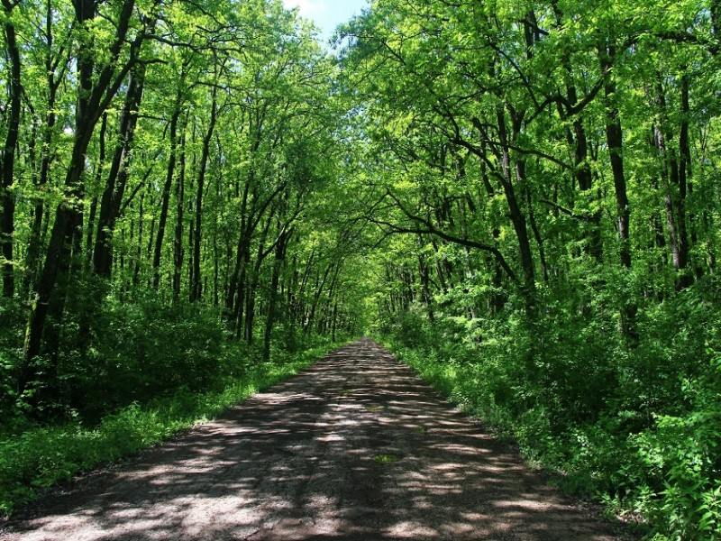
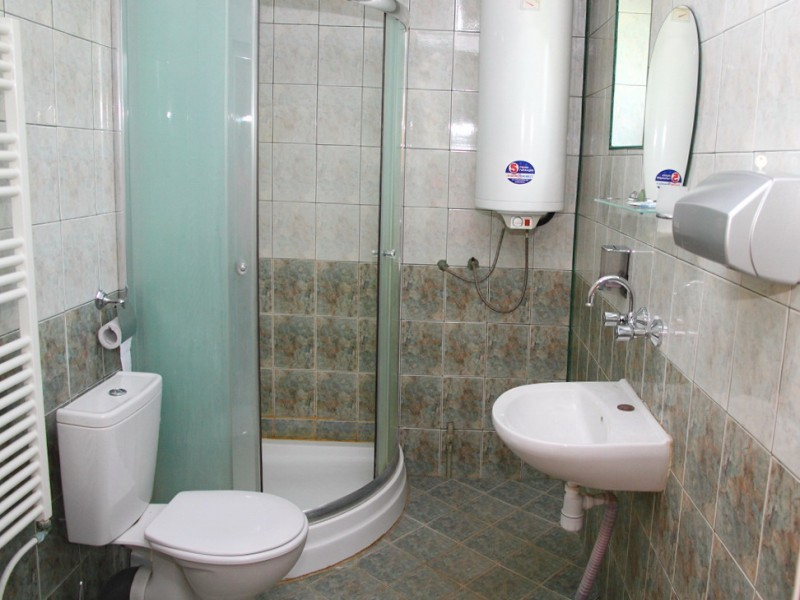
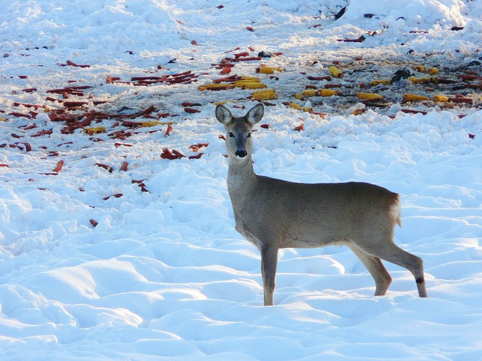
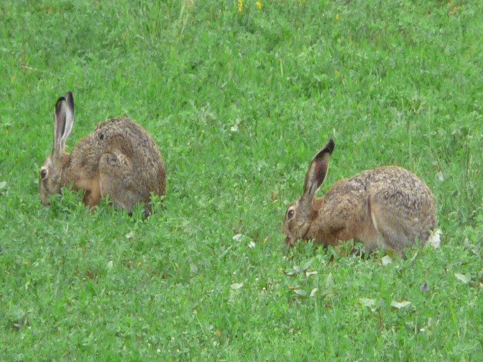
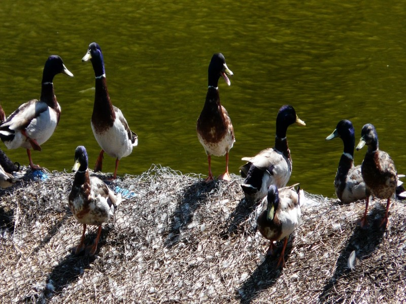

Открийте най-добрите ловни дестинации и хижи в Северна България
Комфортно настаняване в сърцето на природата

Благоприятните климатични условия на района и отличната хранителна база в стопанството, оказват положително влияние върху качеството на трофеите от популациите на едър дивеч. Сред ...
Виж повече
Ловният дом "Батин" е масивна двуетажна сграда, обърната към българския бряг на р. Дунав. До острова се стига с лодки, които са на разположение на гостите на дома. Къщата може да п...
Виж повече
ДГС Сеслав предлага отлични условия за групов лов на фазани фермерско производство с неограничен отстрел, чрез търсене с куче. От 1963г. функционира фазанрия с капацитет за развъжд...
Виж повечеРазнообразие от ловни програми за всеки ловец


Ловни дестинации: Воден, Ири Хисар, Батаклията, Батин, Кокиче, Елен, Фазан...
Виж повече
Груповият лов на дива свиня е най-резултатен след средата на ноември, когато листата са опадали, в гората има добра видимост, а ловците, гоначите и кучетата са влезнали във форма. ...
Виж повечеДГС Сеслав предлага отлични условия за групов лов на фазани фермерско производство с неограничен отстрел, чрез търсене с куче. От 1963г. функционира фазанрия с капацитет за развъждане и отглеждане на 10 000 - 12 000 птици годишно. Отглеждат са 2 вида фазани корейски и монголски. Изграден е полигон за обучение на ловни кучета-птичари.
Държавно горско стопанство Сеслав се намира в Североизточна България, в центъра на Западното Лудогорие на 50 км югоизточно от гр. Русе. Най-близкото летище е на 160 км в град Варна, а столицата София е 350 км.
Ловен дом Елен се намира на 10 км от гр. Кубрат, област Разград. Двуетажната сграда е разположена на брега на голям язовир и предлага 1 единична стая, 2 двойни стаи с тераси към язовира и 1 апартамент. Всяка стая има самостоятелен санитарен възел, хладилник, сателитна телевизия и климатик. Отоплението е локално. На първият етаж са залата за хранене и къта за почивка с камина. Пред ловния дом има просторна тераса с изглед към язовира, а зад него е паркинга.
Ловът на дива свиня от чакало и на гонки предлага незабравими емоции и ценни трофеи. Средната дължина на глигите е 20-24 см, а най-значимият трофей добит в стопанството е с дължина от 32 см.
Най-големият трофей от благороден елен, добит в района на стопанството, е с тегло 13.6 кг и оценка по СIС 238 точки. Годишно могат да се отстрелват 10-12 благородни елена със средно тегло 9-11 кг и единични екземпляри с тегло до и над 12 кг.
Най-големият трофей от сръндак е 539 гр. и оценка 148 CIC точки, обикновено на сезон се отстрелват между 12-15 сръндака със средно тегло 300-450 гр. и единици с тегло до и над 500 гр.
На територията на стопанството се намира Историко-археологически резерват "Сборяново". Могат да се организират посещения на Ивановски скални църкви и Бесарбовски скален манастир. От природните забележителности заслужава да се посетят защитените местности Мющерека, естествените находища на див божур и на турска леска край гр. Кубрат, скалните венци в с. Каменово.
Общата площ на ловностопанските райони на ДГС Сеслав е 8754 ха. Те са разположени върху равнинно-хълмист терен със средна надморска височина 200 метра.



Дестинации: Лъгът, Воден, Ири Хисар, Батаклията, Батин, Кокиче, Елен, Фазан
Еднодневните разходки в планината с фотоапарати, дават възможност на ловците да запечатат прекрасни кадри с множество диви животни в сърцето на Балкана. Фотоловът предлага освен среща с елени, сърни, елени лопатари, диви прасета и друг дребен дивеч, откъсване от забързаното ежедневие, чист въздух и спиращи дъха природни гледки. Професионалният водач, предвождащ групата, провежда кратък курс по разпознаване на различни видове следи, показва основни тънкости в проследяването и издебването на тези прекрасни животни.